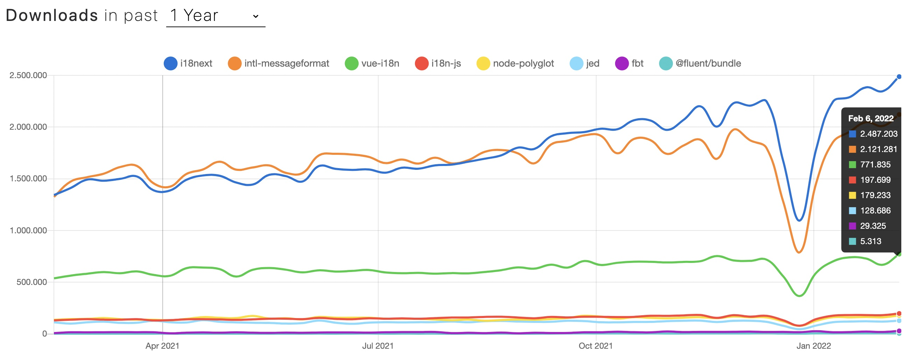

Every night... I dream the same dream. And then... the nightmare begins.
I do what I have to do... to protect i18n.
With this blog post I open a doorway between universes, and I don't know who or what will walk through it...
What do you know about the i18n format multiverse?
Some folks have their theories... they believe it is dangerous.
I think they are right... but I want you at least to know that other parallel universes exist and what they look like.
Clarification
There are far more i18n formats than the ones I am listing here. In order not to get lost in the madness of the infinite i18n format universes, I limit myself here to the first eight formats used in the JavaScript ecosystem that I was able to find.
To define some sort of sorting, the formats are listed based on their weekly downloads: 
i18next
One of the most popular i18n format is the one used by the i18n framework i18next.
It is usually a JSON based format with ability to do plurals (also for languages with multiple plural forms), context, interpolation, formatting, nesting and more.
Let's imagine, we would like to show these text based on how many of which dessert I would like to eat:
- I would like to eat a cake.
- I would like to eat 3 muffins.
- I would like to eat something.
So we can choose to eat what and how much to eat.
With this format it would look like this:
1 | { |
And the instrumented code may look like this (may differ, based on your chosen technology):
1 | i18next.t('dessert', { context: 'cake', count: 1 }) // -> "I would like to eat a cake." |
You see the translation key remains the same for each invocation, and the context and count option differs.
btw: for a languages with multiple plural forms, the instrumented code keeps as is, but the translation json would be different.
This is an "englishified" example for Arabic plural rules (so most people can read it):
The plural rule for arabic is like this:
| plural form | example count |
|---|---|
| zero | 0 |
| one | 1 |
| two | 2 |
| few | 3-10, 103-110, 1003, … |
| many | 11-26, 111, 1011, … |
| other | 100-102, 200-202, 300-302, 400-402, 500-502, 600, 1000, 10000, 100000, 1000000, … |
1 | { |
1 | i18next.t('dessert', { context: 'cake', count: 1 }) // -> "I would like to eat a cake." |
With nesting we can also reduce the repetitions:
1 | { |
But it may be that the translators like this nesting substitution less.
ICU Message Format
The second format is the ICU Message Format.
There are multiple JavaScript modules implementing the ICU message syntax. One of the most used is intl-messageformat by Format.js. It is used behind the scenes also in react-intl.
It is also a key/value based format that could be stored in a JSON or however you like:
1 | import { createIntl } from '@formatjs/intl' |
It also offers plural and select, and the instrumented code may look like this (may differ, based on your chosen technology):
Compared to the previous format, this one uses only 1 key to generate all variations. So the value may look a bit more complex.
1 | intl.formatMessage({ id: 'dessert' }, { what: 'cake', count: 1 }) // -> "I would like to eat a cake." |
Also here the translation key remains the same for each invocation, and the context and count option differs.
vue-i18n
The next found format, while exploring the multiverse, is the vue-i18n format. It is used practically only in the vue-i18n framework itself.
It is also able to do some interpolation with formatting, pluralization and more. But a context feature is missing.
This is how our example would look like:
1 | import { createI18n } from 'vue-i18n' |
And the corresponding invocation:
1 | $t('dessert_cake', { count: 1 }) // -> "I would like to eat a cake." |
Compared the the previous formats, this one needs to change the translation key to accomplish a context like feature.
i18n-js
The origin of this format start Ruby. The i18n-js format is a direct export of translations defined by Ruby on Rails.
To export the translations, a Ruby gem can be used, that's completely disconnected from Rails and that can be used for the solely purpose of exporting the translations, even if your project is written in a different language.
For JavaScript there's a companion JavaScript package.
It comes bundled with all base translations made available by rails-i18n. Base translations allow formatting date, numbers, and sentence connectors, among other things.
The used JSON based format will look like this:
1 | { |
The pluralization keys are organized nested under the normal translation key.
And the corresponding invocation:
1 | i18n.t('dessert_cake', { count: 1 }); // -> "I would like to eat a cake." |
Also this format needs to change the translation key to accomplish a context like feature.
Polyglot.js
This older format provides a solution for interpolation and pluralization, based off of Airbnb’s experience.
Polyglot.js adds basic i18n functionality to Airbnb's Backbone.js and Node.js apps.
This format uses only 3 keys, but...
1 | { |
The plural forms are merged in a single value separated by the delimiter |||| (4 vertical pipe characters).
And the corresponding invocation:
1 | polyglot.t('dessert_cake', { smart_count: 1 }) // -> "I would like to eat a cake." |
Also this format needs to change the translation key to accomplish a context like feature.
Gettext
Gettext is a very old translation standard. There are implementations of Gettext in a lot of programming languages.
Jed is one of the most used gettext implementations for JavaScript. Jed doesn't include a Gettext file parser, but several third-party parsers exist that can have their output adapted for Jed.
So an original Gettext po format...
1 | msgid "" |
...would look like this when used in Jed:
1 | const i18n = new Jed({ |
Not very intuitive, but it works.
1 | i18n.translate('dessert').withContext('cake').fetch() // -> "I would like to eat a cake." |
This format offers, pluralization, interpolation and a context feature, but a strange API in my opinion.
FBT
Of all the formats encountered in the i18n multiverse, this format is arguably the most distant universe, or should I say: most distant "metaverse" ;-)
FBT is invented, used and maintained by Facebook.
It is... special. It comes with text extraction and at the center are not the translations but your code.
So first you need to instrument your code:
1 | <fbt desc="eating cake"> |
Run some scripts, and then you can use the prepared translation files:
1 | { |
Each instrumented code part is mapped with a hash to the translations.
Like said... it's really different than all other formats.
Fluent
The last format in this multiverse trip is Fluent a Mozilla project.
The Fluent format shares a lot of philosophy that drove the design of ICU Message Format.
It's also a key/value based format:
1 | import { FluentBundle, FluentResource } from "@fluent/bundle"; |
Like ICU Message Format it uses only 1 key to generate all variations. So the value may look a bit more complex, like a language on its own.
Coming back home
We looked through the portals of the i18n multiverse and got a few small first impressions about the various formats.
Some are very similar and some others are really different. In the end it's a matter of taste.
Which format do you feel comfortable with?
The most important thing is that all team members are comfortable with it, and that all tools in the localization process supports that format.
So choose your translation management system (TMS) carefully.
Looking at the history of the currently most used i18n format, we can see the the creators of i18next are also the founders of a great translation management system.
So with choosing locize you directly support the future of i18next.
➡️ i18next + locize = true continuous localization
Watch the demo video to learn more: